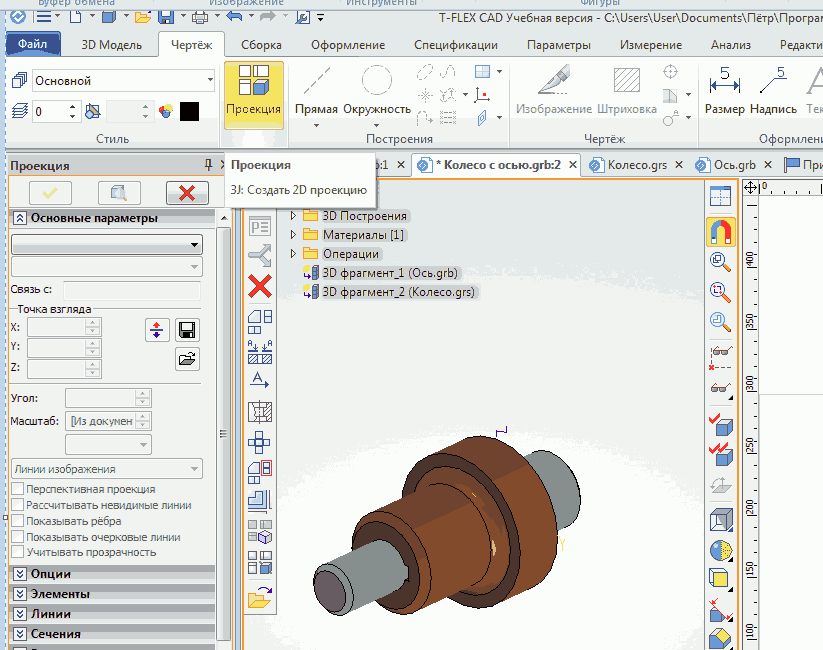
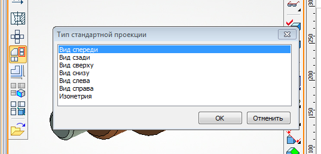
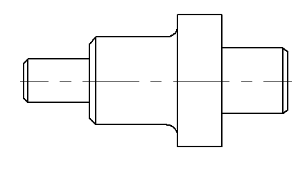
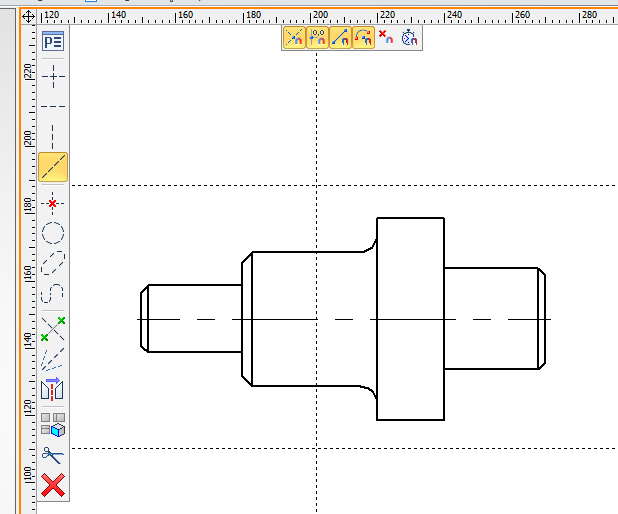
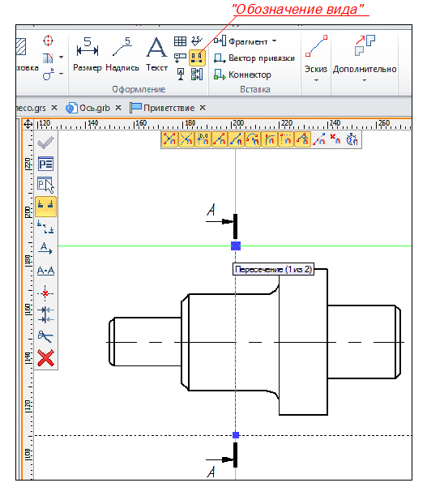
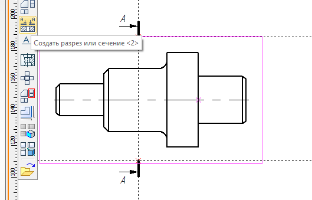
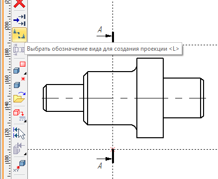
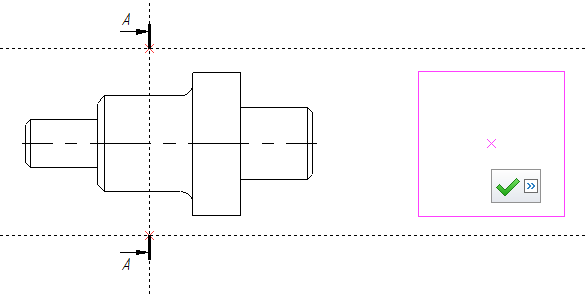
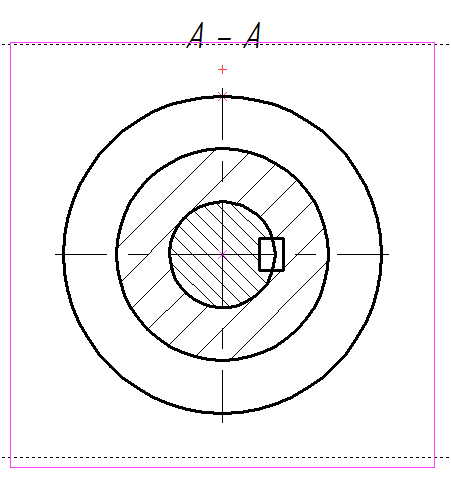

Зайдём в меню Чертёж и выберем команду Проекция.

Из предложенных вариантов создания проекций выберем Создать стандартный вид и в открывшемся меню выберем Вид спереди. Нажмём галочку для завершения.

Буден создан следующий вид.

Создадим разрез. Для того, чтобы получить узлы для обозначения сечения сделаем разметку с помощью линий. Выбираем команду Линия и строим вертикальную прямую и две горизонтальные.

Зайдём в команду Обозначение вида и кликнем ЛКМ в точках пересечения линий. Для завершения кликнем по галочке. Esc для выхода из команды.

Создание разреза производится через команду Проекция. После входа в команду выберем Создать разрез или сечение.

В открывшейся панели зайти в Выбрать обозначение вида для создания проекции и кликнуть по ранее созданному обозначению разреза.

Появится рамка контура разреза. Нам осталось выбрать место его расположения, сделав щелчок ЛКМ в этом месте и по галочке.

В результате получим разрез А — A.

Дальнейшую доработку чертежа можно провести в AutoCAD или BricsCAD, экспортировав его в формат *.dwg
(Меню Файл — Экспорт — 2D документы — AutoCAD(*.dwg).